Background
ACMI existed. Now it needed to scale.
Apple Card Monthly Installments launched in 2019. The idea was simple: buy your iPhone with 24 zero-interest monthly payments and get cash back along with that. It was elegant. It was new. And it was completely limited to iPhone.
By late 2019, the question wasn't whether to expand ACMI, it was how fast we could do it. Mac, iPad, Apple Watch, and accessories were all candidates. My brief: design the experience end-to-end, across every surface, in time for the next iOS release cycle.
This wasn't a redesign. It was an integration: weaving monthly installments into every step of Apple's existing buy flow so it felt native from the start, not bolted on. The work lived in the details: CTA hierarchy, how much mobile real estate each option earned, and making sure customers saw the right information at the right moment, especially around trade-ins and AppleCare, where pricing gets complicated.
Success meant the change felt invisible.
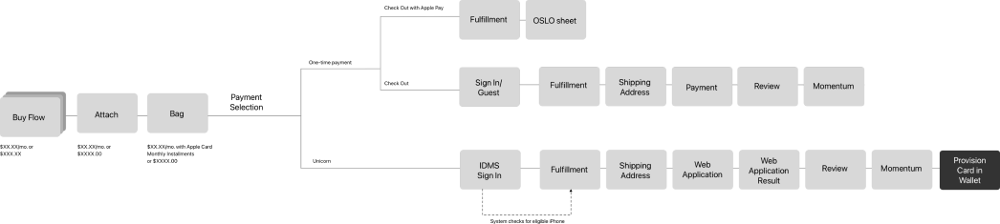
Part one · The scope
Three problems arriving at the same time
Expanding ACMI beyond iPhone introduced three interconnected problems that had to be solved together.
-
01
Scalability across products and terms
- Mac · 12 months
- Watch · 24 months
- Accessories · 6 months
A single bag could contain all three at once. The experience needed to handle mixed-term orders gracefully, without drowning users in a sea of asterisks and fine print.
-
02
Trust in a credit product
Most shoppers thought Apple Card was a payment plan. Discovering it was a credit card application mid-purchase created friction we needed to design around. Credit cards carry baggage (late fees, interest, hidden costs) that Apple Card didn't have, but customers didn't know that yet.
-
03
A pricing story that makes sense
Monthly price, full price, trade-in credits, Daily Cash, taxes, fees, and amount due today all needed to coexist without forcing users to do the math before checkout.
- In scope
- Mac, Watch and iPad buy flows · Trade-in with instant credit · Mixed-term bag · Accessories attach · Native and web credit card applications
- Constraints
- US-only, consumer only · No partial returns · No structural redesign of the buy flow · Fixed iOS ship date · Design ran parallel to requirements
- Out of scope
- Gift cards · Variable APR
Part two · Listening before designing
18 people, two prototypes, one clear message
In March 2020, we ran moderated usability sessions at AnswerLab in San Francisco. Current iPhone owners, all planning a new purchase and most expecting to trade in, tested two prototype variants across desktop, mobile web and the Apple Store app. Before the sessions, the team had built an MVP to test against the existing iPhone experience, with each variant taking a different approach to surfacing the payment choice.
We went in with three questions: How do people perceive ACMI in the buy flow? How do they react when they realize it involves a credit card? Where do the flows break down? What we heard was consistent, clear, and in some places uncomfortable.
What we learned, and what we did about it
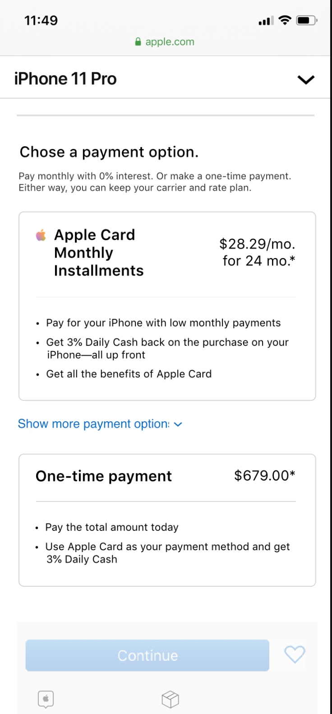
The credit card was invisible until it wasn't
Most participants didn't know monthly installments meant applying for a credit card until the application started. The reveal caused surprise, even a sense of betrayal.
So we named Apple Card wherever the monthly price appeared, not just at checkout.
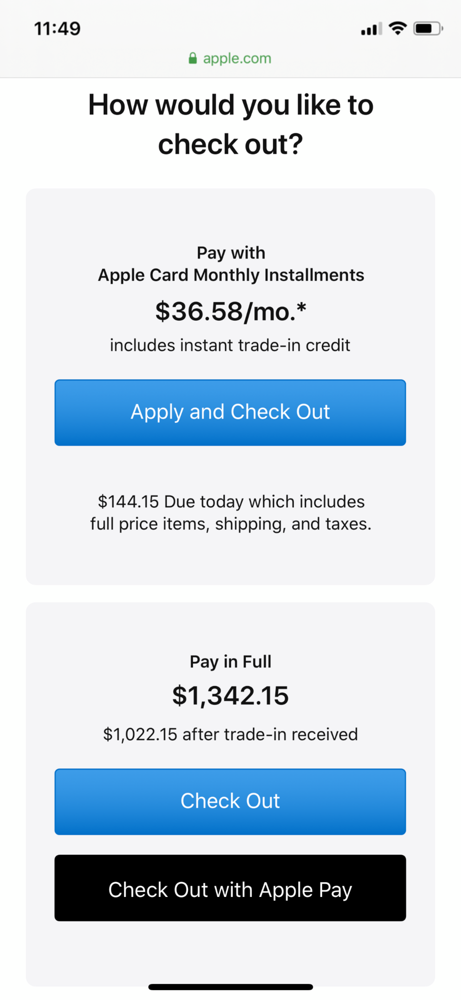
“Apply” seemed dangerous
The word “apply” triggered credit score anxiety. Participants hesitated to tap anything that sounded like it would run a credit check.
So we rewrote the CTA by customer state (see the CTA copy).
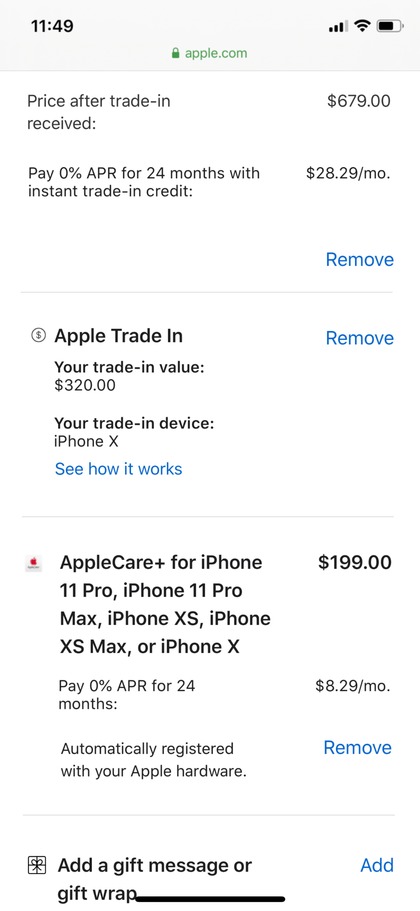
AppleCare+ and trade-in were easy to miss
Choosing a full-price AppleCare+ option upfront in order to pay monthly later felt counterintuitive. And the trade-in value went largely unnoticed on the product page.
So we showed monthly pricing on every add-on and repeated the trade-in credit in the bag.
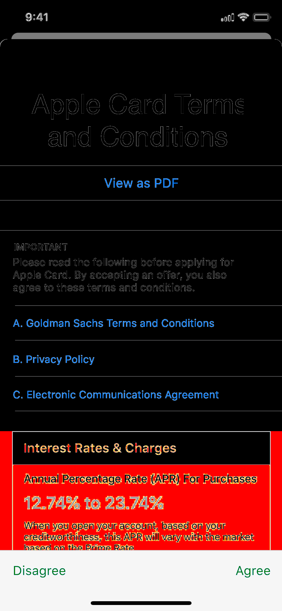
Easier to understand, but still lacking
The new payment details were clearer than the existing iPhone flow, but people still wanted more: what they owe today, what they owe each month, and the total. They also trusted Apple more than the issuing bank.
So we designed the price ledger, and kept Apple's voice front and center.
In their words
- “When you say monthly installments I don't think I'm applying for a credit card.”Greg, Mobile
- “All of a sudden it says continue to Apple Card application. If I do get an Apple Card I'd like something not this hidden.”Daniele, Desktop
- “I wouldn't get a credit card that way. I don't get credit cards on a whim.”Heather, Mobile
- “I can see where the numbers are coming from but I have to do detective work. And math in my head.”Judy, Mobile
- “I'd like to know more about the Apple Card right upfront… Especially that percentage per day… What really is that?”Sue, Desktop
- “It's a lot of steps to buy a phone – you want to buy a phone as quick as possible.”Daniele, Desktop
“Shopping is supposed to be fun. I'd like to have the card set up and then just feel like I'm buying the phone.”Judy, Mobile: a reminder that the experience had to feel light, not laborious.
Part three · Designing the experience
Surface the commitment early. Eliminate the math. Fix the words.
The research gave us three principles to design against. Every decision in the buy flow, bag and checkout was checked against them:
- Does this tell people earlier that Apple Card is involved?
- Does this remove any mental arithmetic?
- Does the language feel like continuation rather than commitment?
Decision 1
The buy flow: pricing that speaks for itself
- Monthly pricing from the start. Full and monthly prices sit side by side on the product page, with the term always beside the number. The monthly price recalculates with every configuration choice, and rides along in the sticky price summary next to Continue.
- A link that names the offer. The link says “0% APR,” not “Learn more.” In testing, people clicked the specific number far more.
- Pricing that reflects the trade-in. Adding a trade-in instantly recalculates the monthly price, so customers see their real cost, never a changing estimate.
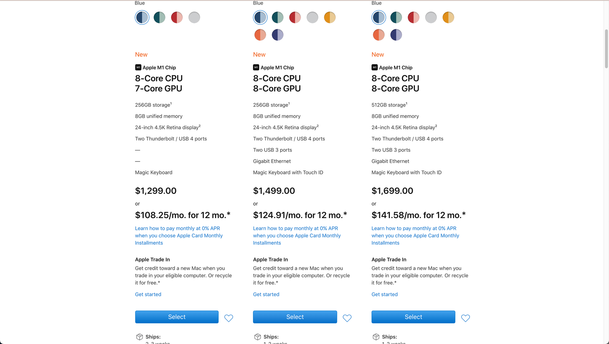
Placement mattered as much as presence. We explored several positions for the Apple Card banner in the bag. Too low and nobody saw it; too high and it overpowered the product information, or got confused with it. The selected design sits just under the page heading, quiet enough to read as part of the bag rather than an ad.
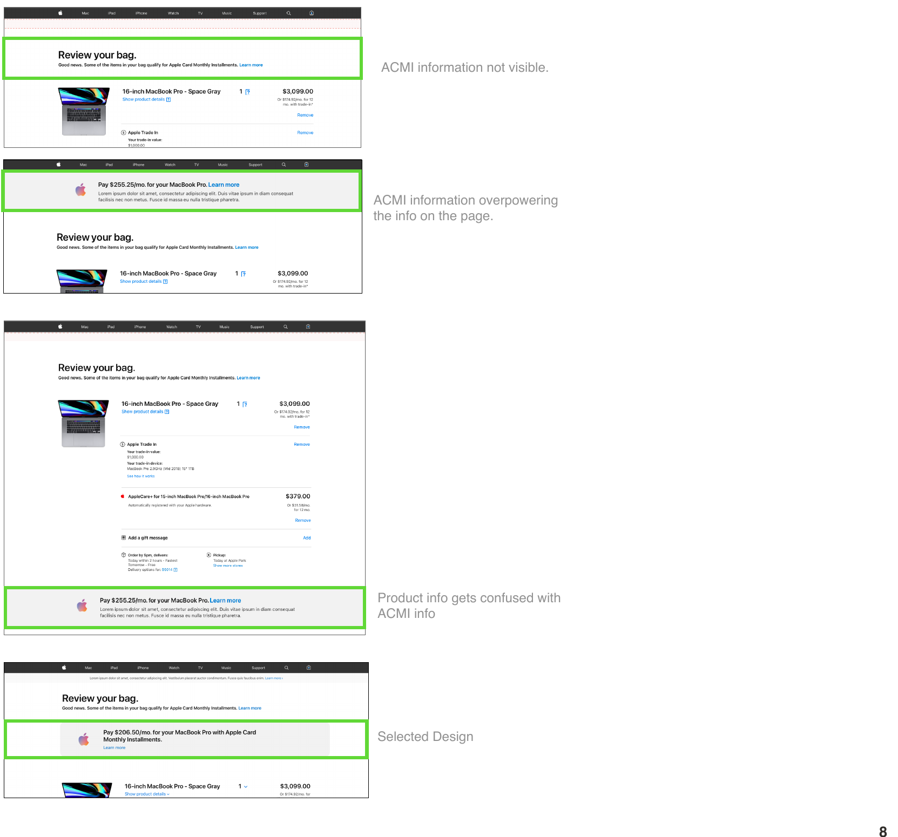
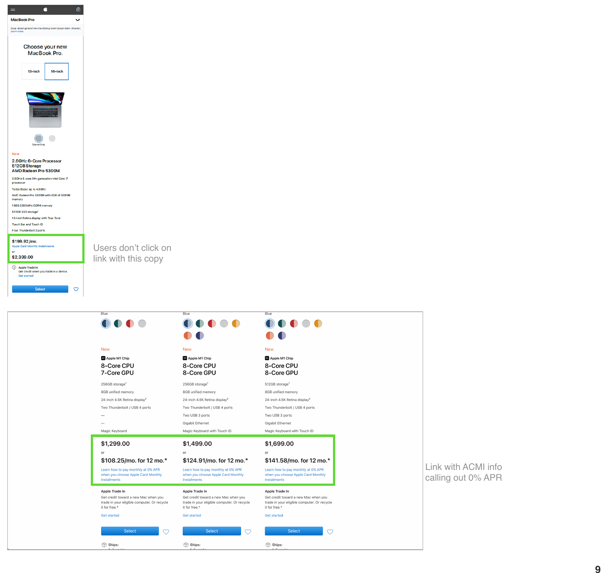
Decision 2
The bag: two choices, equal weight
The bag is where everything converges: products, trade-in, taxes, shipping, and now a decision about how to pay. Apple Pay had to stay visible, and we had to offer Pay in Full and Pay Monthly with Apple Card without letting either one push the other aside. I explored five ways to present that choice.
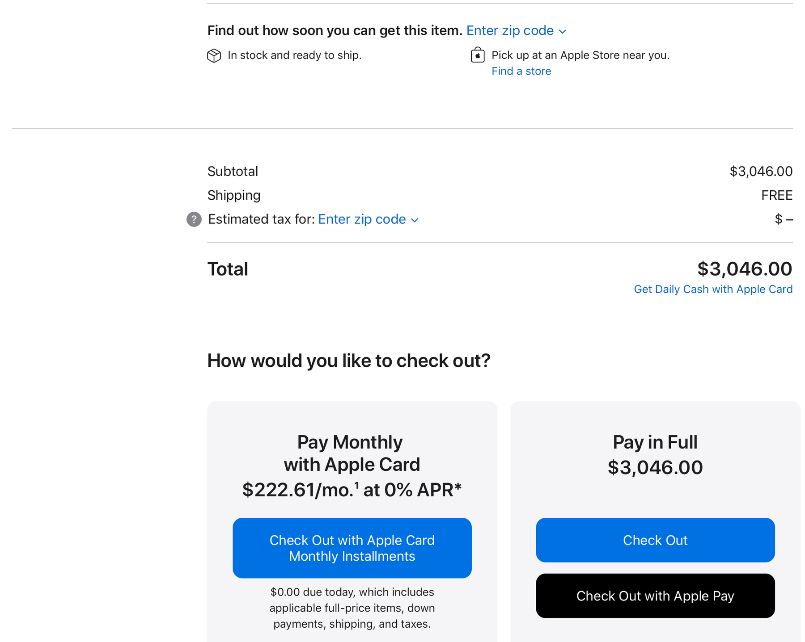
Decision 3
The mixed bag and the ledger
This was the part of the project with the most eyes on it. A single bag could hold a Mac on 12 months, AppleCare+ on the same term, an accessory on 6 months, and an item that couldn't be financed at all. Each line had its own term, and a trade-in could change the financed amount mid-flow.
Adding all of that to the bag would have buried the order. Instead, choosing Pay Monthly opens a price ledger: an overlay that extends the bag rather than replacing it, so customers understand the numbers before they commit, then return to their order in one tap.
The ledger splits the order into two plain questions: what do I pay every month, and what is charged today. Each financed product is listed with its own term, full price and instant trade-in credit. Anything that can't go on installments (a cable, shipping, tax, fees) moves to “Charged to Apple Card today.” Items that couldn't be bought with ACMI at all were flagged, and customers were asked to remove them before continuing with monthly payments.
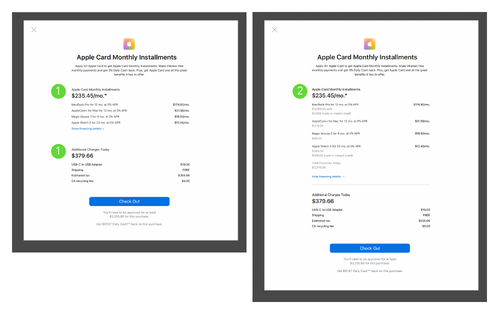
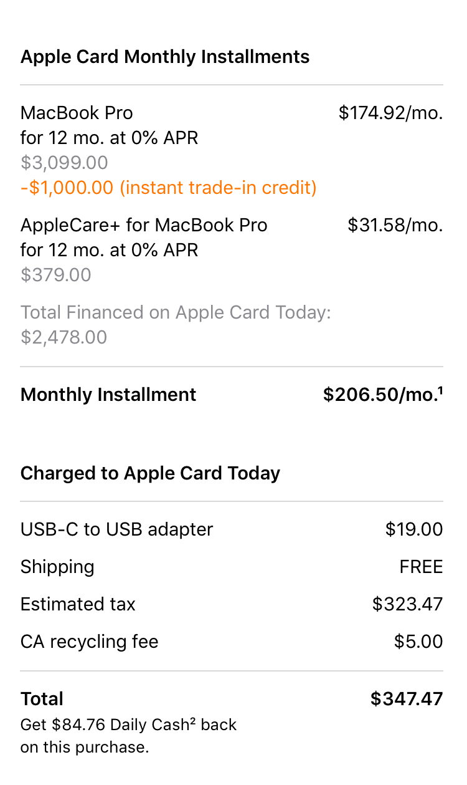
A finding we chose not to fix
Participants said the Apple Card information felt repetitive. But the same sessions showed people moving back and forth to re-check terms before deciding. For a first-of-its-kind credit experience, repetition was transparency, so we kept the details and links within reach at every step.
Decision 4
The CTA copy problem
The monthly payment button was one of the most iterated elements in the project. Each version taught us something about how people react to words like “apply” next to money.
“Learn More and Apply” worked because it set an expectation: there's something more to see before you commit. People worried about their credit score could read at their own pace. People who already had Apple Card skipped straight to checkout. The same surface served both, without routing anyone to a different page.
Part four · Apple Store App
Taking it native
While the web buy flow was a collaborative effort across the team, the Apple Store App was my project to own. I led the native iOS UX end-to-end, from problem framing through final handoff, designing the checkout decision sheet that every Apple Store App customer sees at the moment of purchase.
- Two choices in a sheet. On a phone, putting both options on the page would hide the bag and make going back hard. A sheet keeps the bag visible underneath, so one tap on Cancel brings people back. It also asks for a deliberate choice instead of defaulting to the first option.
- Only what's needed to decide. Each card holds the price, the monthly amount with its term, the trade-in note and what's due today. Everything else is one tap away in the ledger.
- A CTA for each customer. “Check Out” for cardholders, “Learn More and Apply” for everyone else.
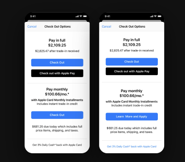
Because web and app share the same two-card structure, customers can start on one and finish on the other without relearning the decision. I mapped every state of the app flow for engineering handoff: the splitter with and without Apple Card, the exclusion experience for ineligible items, the ledger, sign-in, the native application and confirmation.
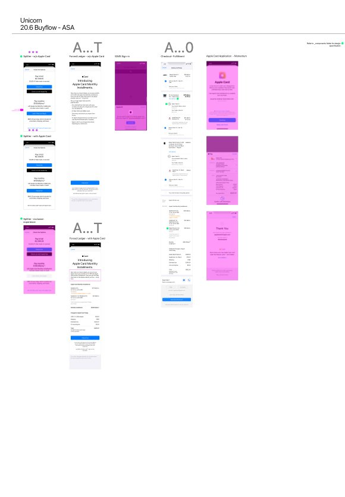
Part five · What shipped
From iPhone-only to every Apple product line
ACMI launched across Mac, iPad, Apple Watch and accessories in 2020, in two releases. The design shipped on desktop, mobile web and the Apple Store App under one system, with financing terms mapped per product line.
Financing stopped being a checkout option and became part of how price is communicated: monthly pricing sits beside full price everywhere it appears. The experience stayed live until Apple.com's next redesign, and parts of the approach carried into it.
What I learned
- Clarity beats cleverness with credit. People are wary of credit cards because of hidden fees, late charges and high interest. Every button had to say exactly what the next screen would ask of them.
- Design for the back-and-forth. People move between product details and financing details before deciding, so each detail has to be purposeful and easy to find again.
- People decide on the total. The monthly price gets attention, but people want to know what they'll pay in total. Showing both together is what earned trust.
- The hard part is invisible. Each screen looks simple on its own. The difficulty lived in the constraints (mixed terms, trade-ins, a fixed ship date) and in the decisions that made them disappear for the customer.
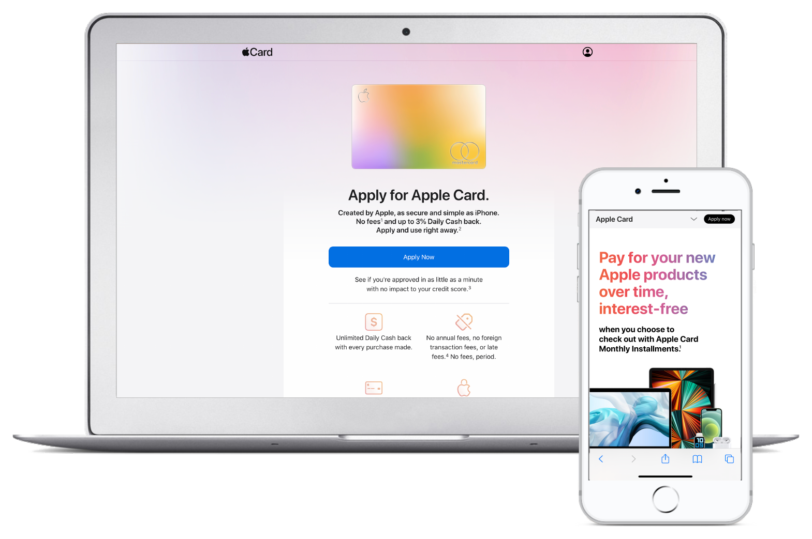